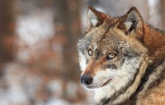

Hi! My name is Allan kamau
Welcome to my First website!
I will be discussing on the different things i have learnt and also touch in one of my Favourite animals.
Here are some of the things i am going to learn today:
Check out Moringa School. It's a great place to learn web development skills!
Here is a link to myFavourite animal
Wolves are legendary because of their spine-tingling howl, which they use to communicate. A lone wolf howls to attract the attention of his pack, while communal howls may send territorial messages from one pack to another. Some howls are confrontational. Much like barking domestic dogs, wolves may simply begin howling because a nearby wolf has already begun.
